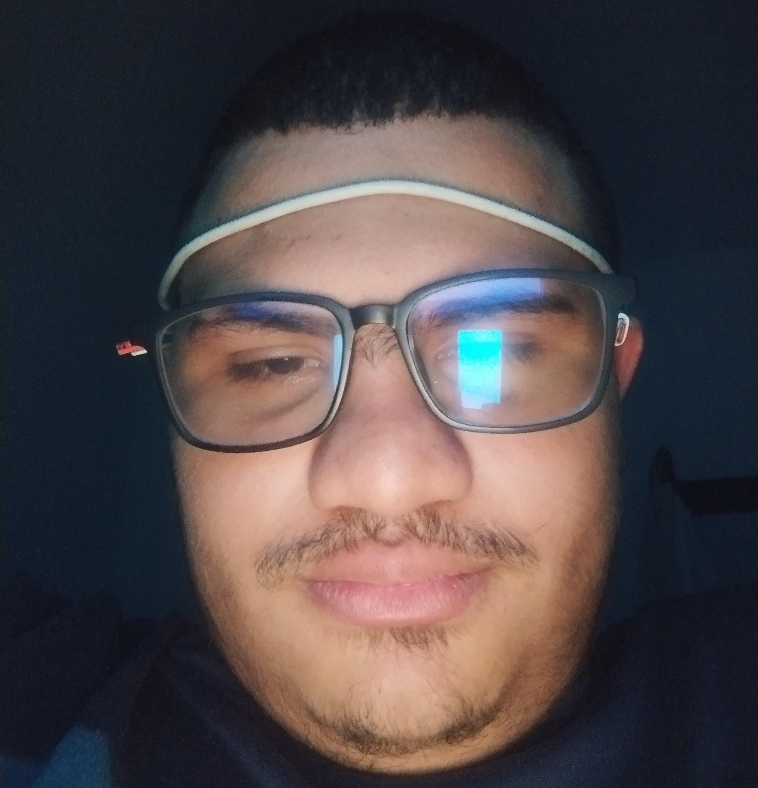

Unity me enseñó que mantener una arquitectura antigua a largo plazo es igual a mantener una relación tóxica, desgastante y deprimente. Godot es como aquel amor curioso, al que siempre vuelves para aprender algo nuevo, empalagoso, delirante.
Salí del Tutorial Hell y empecé a crear juegos serios de verdad.
Mi secreto: Leer la documentación
Así fue como creé mi propio estudio de videojuegos Viremorfe Studios, en el cuál actualmente estoy desarrollando un juego de terror psicológico procedural (como si no fuera suficiente terror ya vivir en Venezuela).
Actualmente estoy desarrollando un plugin en C++ con GDextension para manejar la proceduralidad de mi juego en Godot!
Primer vistazo a Shadead:
Creo que todos ya sabemos de que va Blender, el programita para 3D, así que hablemos de Blockbench, si hiciera un videojuego tipo voxel esta definitivamente sería mi herramienta preferida, el uv mapping es fantasticamente más sencillo que en Blender y el texturizado es prácticamente hacer pixel art encima de los modelos.
Sin embargo hay cosas que sencillamente no puede hacer Blockbench, por mucho que me encante (simulaciones realistas, por ejemplo) así que lo complemento con Blender.
Intenté FLstudio pero luego me di cuenta que era una herramienta para satisfacer a un sistema educativo desfasado, así que me quedé con LMMS con el cuál no tenía que pasar un semestre entero para saberlo usar. Todo lo que escuchas aquí lo hice en LMMS.